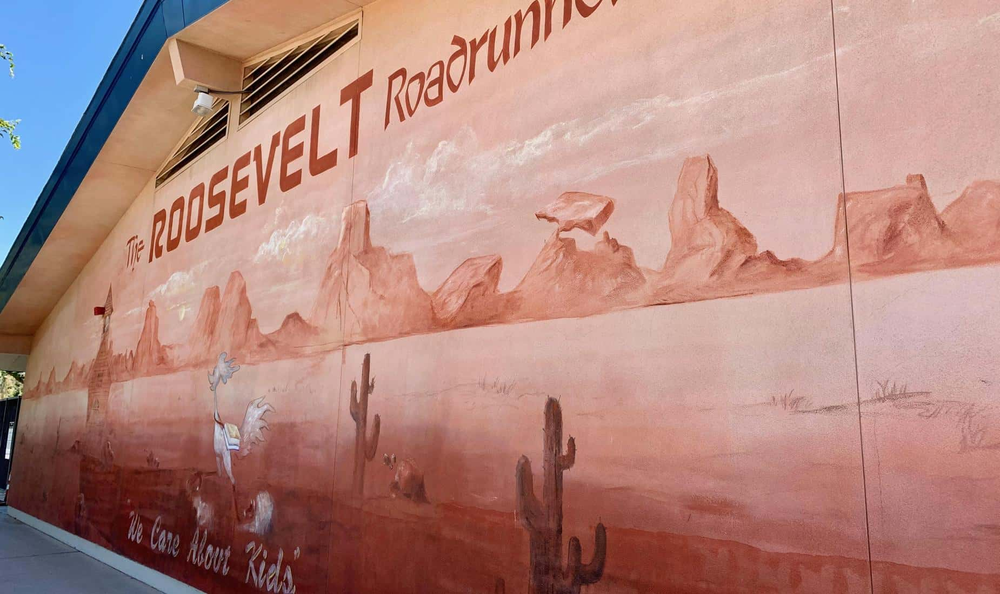
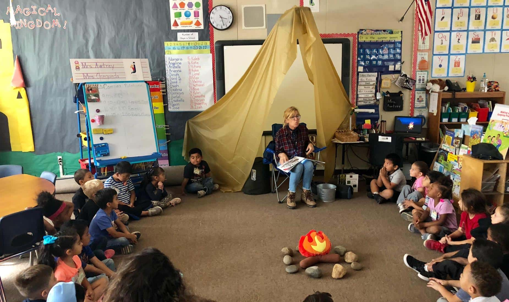

The start of learning a little more than common sense...
When and Where Was Your Time in Elementary School?
I attended a K-6 elementary school called Roosevelt Elementary School here in Fresno, California. It's part of the Central Unified School District in Fresno. The years I attended were from 2002-2009 from Kindergarten all the way to 6th grade.
I did end up graduating from that school. Academics weren't a big deal during my time there.


What was the atmosphere like there?
The classrooms weren't massive as far as I recall. Normally the class was peaceful with no one attempting to cause trouble. Honestly, everywhere I went, it felt like I could be at peace most of the time.
Thanks to the atmosphere there, getting my work done and understanding concepts in school felt easy. I ended up being an honor student over there at that school. Hopefully the school continues to get better as time goes on.
Anything else you want to say about the school?
One of the activities I did over at Roosevelt was participate in was concert band. I remember starting to use a recorder in 4th grade, which helped get me interested in music. I didn't continue playing the recorder afterwards, but I did check to see what other instruments I could play.
Shortly after, I decided to participate in the school's concert band and give the trumpet a try. It turned out I was fairly good with a trumpet, and I continued to play that instrument in concert band up to the 6th grade in that school. That helped me transition to playing trumpet in the school band for middle school and high school.